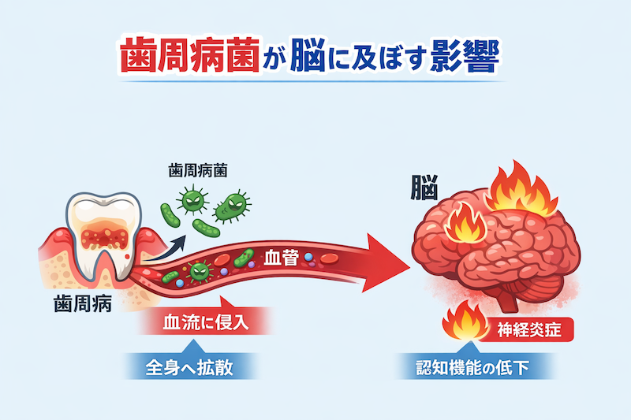

公開日：2026年7月｜最終更新：2026年7月
「歯ぐきの病気」が「脳」に関係する可能性があることが、近年注目されています。
歯周病は単なる口のトラブルではなく、全身の健康、さらには認知症との関連も示唆されています。
歯周病は、細菌感染によって歯ぐきに炎症が起こる病気です。
初期には自覚症状が少なく、気づかないうちに進行することが特徴です。
歯周病菌は歯ぐきの血管から体内に入り、血流を通じて全身へ広がることがあります。
一部の研究では、歯周病菌が脳に到達する可能性も指摘されています。
歯周病による慢性的な炎症は、炎症性物質（サイトカイン）を増加させます。
これが脳にも影響し、「神経炎症」を引き起こす可能性があります。

アルツハイマー病では「アミロイドβ」や「タウタンパク」といった物質が関与します。
歯周病菌の毒素が、これらの異常な蓄積を促す可能性が示唆されています。
現時点では、歯周病治療だけで認知症を完全に予防できるとは断定されていません。
しかし、歯周病による炎症を改善することで、認知症リスクを低減できる可能性があり、予防の重要な一手であると考えられています。
歯周病は治療やケアによって改善が期待できる病気です。
炎症を抑えることで、全身への悪影響を減らすことができます。
脳への悪影響も軽減できる可能性があります。
歯周病と認知症の関係については、まだ研究段階ではあるものの、関連が強く示唆されています。
特に「炎症」は両者に共通する重要な要素です。
今から始める「ケア」でも遅くはないのです。
口の健康を守ることは、脳の健康を守ることにつながります。
今日からできるケアを始めましょう。